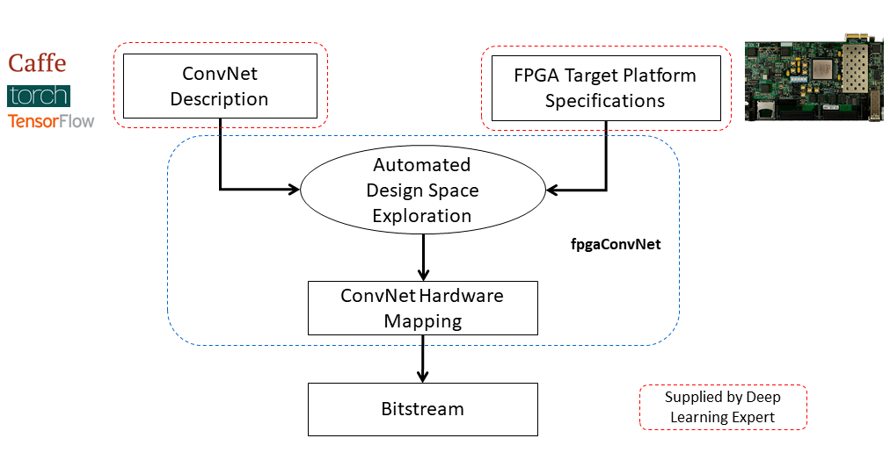
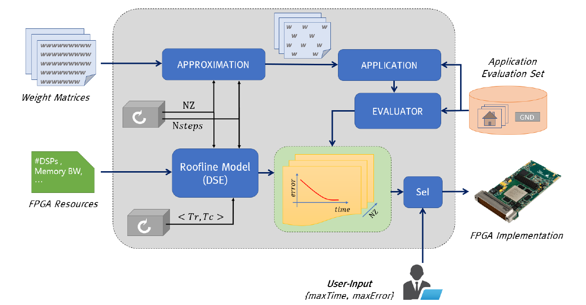
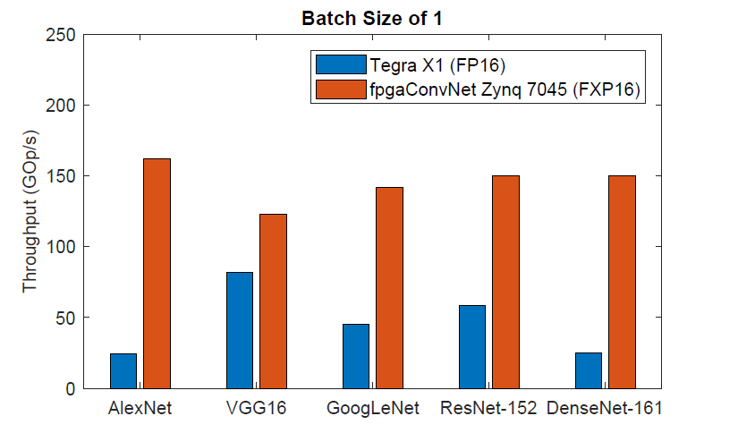

Stylianos I. Venieris
Senior Research Scientist at Samsung AI Center, Cambridge
s.venieris@samsung.com
Google Scholar - ResearchGate - DBLP - LinkedIn - Twitter
I am currently a Senior Research Scientist at Samsung AI, where I lead the Distributed AI group, focusing on on-device and distributed forms of machine learning. Before, I was a Research Assistant in the Intelligent Digital Systems Lab which is part of the Department of Electrical and Electronic Engineering at Imperial College London. I received my PhD from Imperial College London under the supervision of Dr. Christos Bouganis.
My research interests span three primary topics: the development of principled methodologies for the mapping of deep learning algorithms on mobile and embedded platforms; the design of novel end-to-end deep learning systems that robustly meet multiobjective performance requirements; and the design of custom hardware accelerators for the high-performance, energy-efficient deployment of deep neural networks (DNNs).
During my PhD, I focused on the design of highly optimised hardware accelerators that deliver fast and energy-efficient inference for various types of DNNs (e.g. CNNs, LSTMs), while making FPGAs more accessible to AI practitioners through design automation. In this endeavour, I developed a synchronous dataflow model for analytically capturing DNN workloads, and designed hardware architectures and methodologies for the automated mapping of deep learning models to high-performance, energy-efficient reconfigurable FPGA-based systems.
fpgaConvNet Toolflow
During my PhD, I developed fpgaConvNet, a framework for the automated mapping of Convolutional Neural Networks on FPGAs. More details can be found here.
Service
Workshop and tutorial organisation:
- 6th International Workshop on Embedded and Mobile Deep Learning (EMDL) @ MobiSys 2022
- 5th International Workshop on Embedded and Mobile Deep Learning (EMDL) @ MobiSys 2021
- 4th International Workshop on Embedded and Mobile Deep Learning (EMDL) @ MobiCom 2020
- Tutorial on Computer Architectures and Hardware Acceleration for Deep Learning @ MobiCom 2019
Guest editor:
- IEEE Network Special Issue (Jan 2022): Bridging the Gap between Industry and Academia for Networking Reseach
Reviewer for the following journals:
- IEEE Transactions on Neural Networks and Learning Systems (TNNLS)
- Nature Machine Intelligence
- IEEE Transactions on Mobile Computing (TMC)
- IEEE Transactions on Computer-Aided Design of Integrated Circuits and Systems (TCAD)
- Journal of Parallel and Distributed Computing (JPDC)
- ACM Transactions on Architecture and Code Optimization (TACO)
- Journal of Systems Architecture (JSA)
- ACM Transactions on Reconfigurable Technology and Systems (TRETS)
- ACM Computing Surveys (ACM CSUR)
- IEEE Design & Test
- IET Computer & Digital Techniques
- IEEE Embedded Systems Letters (ESL)
- IEEE Access
Program Committee Member
- ACM/IEEE Symposium on Edge Computing (SEC) 2022
- IEEE International Symposium on Field-Programmable Custom Computing Machines (FCCM) 2022
- IEEE International Conference on Field-Programmable Logic and Applications (FPL) 2022
- IEEE International Conference on Application-specific Systems, Architectures and Processors (ASAP) 2022
- IEEE International Conference on Field-Programmable Logic and Applications (FPL) 2021
- 1st Workshop on Distributed and Private Machine Learning (DPML), ICLR Workshop, 2021
- 1st Workshop on Distributed Machine Learning (DistributedML) 2020
- IEEE International Conference on Field-Programmable Logic and Applications (FPL) 2020
- 2nd International Workshop on Challenges in Artificial Intelligence and Machine Learning for Internet of Things (AIChallengeIoT) 2020
- 2nd Workshop on Machine Learning on Edge in Sensor Systems (SenSys-ML) 2020
- IEEE International Conference on Parallel and Distributed Systems (ICPADS) 2019
- 2nd Workshop on Machine Learning on Edge in Sensor Systems (SenSys-ML) 2019
External Reviewer
- ACM/SIGDA Int. Symp. on Field-Programmable Gate Arrays (FPGA) 2021
- IEEE International Conference on Field-Programmable Logic and Applications (FPL) 2019
- ACM/SIGDA Int. Symp. on Field-Programmable Gate Arrays (FPGA) 2019
Teaching Activities
- PG Teaching Assistant for:
- Digital System Design, Imperial College London, '15 - '18
- Advanced Digital System Design, Imperial College London, '17 - '18
- Electronic & Information Engineering 1st Year Group Project, Imperial College London, '17 - '18
- Co-supervisor for:
- master's final year projects
- research summer placements
Background and Short Bio
- PhD on Reconfigurable Hardware and Deep Learning, Imperial College London, '18
- MEng in Electrical and Electronic Engineering, Imperial College London, '14
- Governors' MEng Prize awarded for academic excellence, Imperial College London, '14
- Engineering Dean's List '12, '13, '14
- EPSRC Doctoral Training Studentship award, '14
- Software Developer Intern at
- SingularLogic, European Projects Department ('12, 3 months)
Press
- The Next Platform, July 2020 - Interview on using FPGAs for AI training [video]
- EE Journal, August 2018 - "Where’s the CNN Synthesis? Is EDA Missing a Market?"
Research Projects
|
unzipFPGA: Mitigating Memory Wall Effects in CNN Engines with On-the-Fly Weights Generation
One of the most widely adopted paradigms that lies in the midpoint of the flexibility-customisation spectrum is the single computation engine (SCE). Under this paradigm, a powerful processing engine is time-shared to sequentially execute the layers of a CNN. This allows for accelerator’s resources to be reused across both layers and CNN models, without the need to reconfigure the fabric. Nonetheless, their attainable performance is often bounded by two primary factors: 1) layers with low computation-to-communication ratio that become memory-bound and 2) the suboptimal mapping of diverse layers on the fixed configuration of the SCE that leads to underutilised processing elements (PEs). In this work, we investigate the implications in terms of CNN engine design for a class of models that introduce a pre-convolution stage to decompress the weights at run time. We refer to these approaches as on-the-fly. To minimise the negative impact of limited bandwidth on memory-bound layers, we present a novel hardware component that enables the on-chip on-the-fly generation of weights. We further introduce an input selective PE design that balances the load between PEs on suboptimally mapped layers. Finally, we present unzipFPGA, a framework to train on-the-fly models and traverse the design space to select the highest performing CNN engine configuration. Quantitative evaluation shows that unzipFPGA yields an average of 2.57× performance efficiency gain over highly optimised GPU designs under the same power constraints and up to 3.94× higher performance density over the state-of-the-art FPGA-based CNN accelerators.
Stylianos I. Venieris, Javier Fernandez-Marques and Nicholas D. Lane |
|
|
Neural Enhancement for Visual Content Streaming Systems: A Survey and the Road Ahead
Internet-enabled smartphones and ultra-wide displays are transforming a variety of visual apps spanning from on-demand movies and 360° videos to video-conferencing and live streaming. However, robustly delivering visual content under fluctuating networking conditions on devices of diverse capabilities remains an open problem. In recent years, advances in the field of deep learning on tasks such as superresolution and image enhancement have led to unprecedented performance in generating high-quality images from low-quality ones, a processwe refer to as neural enhancement. In this paper, we survey state-of-the-art content delivery systems that employ neural enhancement as a key component in achieving both fast response time and high visual quality. We first present the deployment challenges of neural enhancement models. We then cover systems targeting diverse use-cases and analyze their design decisions in overcoming technical challenges. Moreover, we present promising directions based on the latest insights from deep learning research to further boost the quality of experience of these systems.
Royson Lee, Stylianos I. Venieris and Nicholas D. Lane |
|

|
HAPI: Hardware-aware design of multi-exit progressive CNNs
Multi-exit CNNs, or progressive inference networks, are becoming an emerging approach for delivering inference with an adaptive accuracy-complexity trade-off. Nevertheless, existing studies on early exiting have primarily focused on the training scheme, without considering the use-case requirements or the deployment platform. This work presents HAPI, a hardware-aware methodology for generating optimised high-performance multi-exit networks. At its core lies a synchronous dataflow modelling framework that, in contrast to conventional modelling for *static* CNNs, is capable of capturing the *dynamic* conditional execution of multi-exit CNNs. By explicitly considering the target hardware, HAPI efficiently traverses the design space and yields a multi-exit network, tailored to the application's multi-objective needs. Quantitative evaluation shows that our system consistently outperforms alternative search mechanisms and state-of-the-art early-exit schemes across various latency budgets. Moreover, it pushes further the performance of highly optimised hand-crafted early-exit CNNs, delivering up to 5.11× speedup over lightweight models on imposed latency-driven SLAs for embedded devices. Overall, this work shows how multi-exit CNNs together with hardware-aware customisation can be key enablers for meeting the performance goals of AI applications across diverse platforms.
Stefanos Laskaridis, Stylianos I. Venieris, Hyeji Kim and Nicholas D. Lane |
|
SPINN: Robust distributed inference through multi-exit progressive models and device-server synergy
Despite the soaring use of convolutional neural networks (CNNs) in mobile applications, uniformly sustaining high-performance inference on mobile has been elusive due to the excessive computational demands of modern CNNs and the increasing diversity of deployed devices. A popular alternative comprises offloading CNN processing to powerful cloud-based servers. Nevertheless, by relying on the cloud to produce outputs, emerging mission-critical and high-mobility applications, such as drone obstacle avoidance or interactive applications, can suffer from the dynamic connectivity conditions and the uncertain availability of the cloud. In this paper, we propose SPINN, a distributed inference system that employs synergistic device-cloud computation together with a progressive inference method to deliver fast and robust CNN inference across diverse settings. The proposed system introduces a novel scheduler that co-optimises the early-exit policy and the CNN splitting at run time, in order to adapt to dynamic conditions and meet user-defined service-level requirements. Quantitative evaluation illustrates that SPINN outperforms its state-of-the-art collaborative inference counterparts by up to 2× in achieved throughput under varying network conditions, reduces the server cost by up to 6.8× and improves accuracy by 20.7% under latency constraints, while providing robust operation under uncertain connectivity conditions and significant energy savings compared to cloud-centric execution.
Stefanos Laskaridis, Stylianos I. Venieris, Mario Almeida, Ilias Leontiadis and Nicholas D. Lane |
|
|
MobiSR: Delivering high-performance on-device super-resolution through heterogeneous mobile processors
In recent years, convolutional networks have demonstrated unprecedented performance in the image restoration task of super-resolution (SR). SR entails the upscaling of a single low-resolution image in order to meet application-specific image quality demands and plays a key role in mobile devices. To comply with privacy regulations and reduce the overhead of cloud computing, executing SR models locally on-device constitutes a key alternative approach. Nevertheless, the excessive compute and memory requirements of SR workloads pose a challenge in mapping SR networks on resource-constrained mobile platforms. This work presents MobiSR, a novel framework for performing efficient superresolution on-device. Given a target mobile platform, the proposed framework considers popular model compression techniques and traverses the design space to reach the highest performing trade-off between image quality and processing speed. At run time, a novel scheduler dispatches incoming image patches to the appropriate model-engine pair based on the patch’s estimated upscaling difficulty in order to meet the required image quality with minimum processing latency. Quantitative evaluation shows that the proposed framework yields on-device SR designs that achieve an average speedup of 2.13× over highly-optimized parallel difficulty-unaware mappings and 4.79× over highly-optimized single compute engine implementations.
Royson Lee, Stylianos I. Venieris, Lukasz Dudziak, Sourav Bhattacharya and Nicholas D. Lane |
|
 |
f-CNNx: Enabling emerging multi-CNN applications
In the construction of complex AI systems, CNN models are used as building blocks of a larger system. In this respect, multi-CNN systems have emerged, employing several models, each one trained for a different subtask. Nevertheless, deploying multiple models on a target platform poses a number of challenges. From a resource allocation perspective, with each model targeting a different task, the performance constraints, such as required throughput and latency, vary accordingly. Instead of being model-agnostic, this property requires the design of an architecture that captures and reflects the performance requirements of each model. Moreover, in resource-constrained setups, multiple CNNs compete for the same pool of resources and hence resource allocation between models becomes a critical factor. f-CNNx is a toolflow which addresses the mapping of multiple CNNs on a target FPGA platform while meeting the required performance for each model. Starting from a set of pretrained models, f-CNNx explores a wide range of resource and bandwidth allocations and incorporates the application-level importance of each model by means of multiobjective cost functions to guide the design space exploration to the optimum hardware design.
Stylianos I. Venieris and Christos-Savvas Bouganis |
 |
Landscape of CNN-to-FPGA toolflows and future directions
To drive the experimentation and development of novel deep learning models, both industrial and academic institutions have released software frameworks, optimised for training and deploying deep learning models with high compute performance. Currently, frameworks such as Caffe2, PyTorch and CNTK achieve high processing speed by primarily targeting power-hungry CPUs and GPUs. Recently, FPGAs have emerged as a potential alternative platform that can reduce significantly power consumption cost while meeting the compute requirements of modern deep learning systems. In this project, we survey the landscape of toolflows which automate the mapping of the CNN inference stage to FPGA-based platforms. From a deep learning scientist perspective, we conduct a study over the supported deep learning models, including DNNs, CNNs and LSTMs, the achieved processing speed and the applicability of each toolflow on specific deep learning applications, from latency-critical mobile systems to high-throughput cloud services. From a computer engineering perspective, we present a detailed analysis of the architectural choices, design space exploration methods and implementation optimisations of the existing tools, together with insightful discussions. With an eye to the future of FPGA-based deep learning, we present a set of promising areas of research that can bridge the gap between FPGAs and deep learning practitioners and enable FPGAs to provide the necessary compute infrastructure that can drive future deep learning algorithmic innovations.
To encourage the meaningful and fair comparison between toolflows, we present a uniform evaluation methodology that includes performance metrics
and a benchmark suite that aims to assess the strengths and limitations of each toolflow.
Read more.
Stylianos I. Venieris, Alexandros Kouris and Christos-Savvas Bouganis |
|  |
fpgaConvNet: An automated CNN-to-FPGA toolflow
Convolutional Neural Networks (ConvNets/CNNs) are a powerful Deep Learning model which has demonstrated state-of-the-art accuracy in numerous AI tasks, from object detections to neural image captioning. In this context, FPGAs constitute a promising platform for the deployment of ConvNets which can satisfy the demanding performance needs and power constraints posed by emerging applications. Nevertheless, the effective mapping of ConvNets on FPGAs requires Deep Learning practitioners to have expertise in hardware design and familiarity with the esoteric FPGA development toolchains, and therefore poses a significant barrier. fpgaConvNet is a framework that automates the mapping of ConvNets onto reconfigurable FPGA-based platforms. Starting from a high-level description of a ConvNet model, fpgaConvNet considers both the input model's workload and the application-level performance needs, including throughput, latency and multiobjective criteria, in order to generate optimised streaming accelerators tailored for the target FPGA. fpgaConvNet is being developed by the Intelligent Digital Systems Lab (iDSL).
Stylianos I. Venieris and Christos-Savvas Bouganis |
|  |
Approximate FPGA-based LSTMs under limited computation time
Long Short-Term Memory (LSTM) networks have demonstrated state-of-the-art accuracy in several pattern recognition tasks, with the prominence of Natural Language Processing (NLP) and speech recognition. Nevertheless, as LSTM models increase in complexity and sophistication, so do their computational and memory requirements. Emerging latency-sensitive applications including mobile robots and autonomous vehicles often operate under stringent computation time constraints, where a decision has to be made in real-time. To address this problem, we developed an approximate computing scheme which enables LSTMs to increase their accuracy as a function of the computation time budget, together with an FPGA-based architecture for the high-performance deployment of the approximate LSTMs. By targeting the real-life Neural Image Caption (NIC) model developed by Google, the proposed framework requires 6.65x less time to achieve the same application-level accuracy compared to a baseline implementation, while achieving an average of 25x higher accuracy under the same computation time constraints. This is the first work in the literature to address the deployment of LSTMs under computation time constraints.
Michalis Rizakis, Stylianos I. Venieris, Alexandros Kouris and Christos-Savvas Bouganis |
|  |
Energy-efficient CNN mappings on embedded FPGAs
The deployment of large CNNs on mobile and embedded settings is a challenging task due to the strict throughput, latency and power requirements. With conventional parallel architectures, such as embedded CPUs, GPUs and DSPs, reaching the limit of satisfying these constraints, specialised hardware solutions are becoming a necessity. In this work, we present an automated toolflow that maps diverse CNNs, with both regular and irregular structure, to optimised FPGA-based designs, and demonstrate that the generated designs deliver up to 6.65x higher performance than highly optimised embedded GPU designs for the same power budget in embedded settings.
Stylianos I. Venieris and Christos-Savvas Bouganis |
 |
Latency-driven design for FPGA-based CNNs
The majority of existing CNN implementations, targeting CPUs, GPUs and FPGAs, are optimised with high throughput as the primary objective. Emerging new AI systems, from self-driving cars and UAVs to low response-time, cloud-based analytics services, require the very low-latency execution of several CNN-based tasks without the processing of inputs in batches. To meet these requirements, we place latency at the centre of optimisation and generate latency-optimised hardware designs for the target CNN-FPGA pairs. This is achieved by introducing a latency-driven methodology, which enables the high-performance execution of CNNs without the need for batch processing. The developed approach enables the expansion of the architectural design space, to meet the performance needs of modern latency-sensitive applications and delivers up to 73.54x and 5.61x latency improvements over throughput-optimised designs on AlexNet and VGG-16 respectively.
Stylianos I. Venieris and Christos-Savvas Bouganis |
Publications
Journals
Stylianos I. Venieris, Christos-Savvas Bouganis and Nicholas D. Lane
Multi-DNN Accelerators for Next-Generation AI Systems,
IEEE Computer, 2022. [bibtex | preprint]
Mario Almeida*, Stefanos Laskaridis*, Stylianos I. Venieris*, Ilias Leontiadis* and Nicholas D. Lane
DynO: Dynamic Onloading of Deep Neural Networks from Cloud to Device,
Special Issue on Accelerating AI on the Edge, ACM Transactions on Embedded Computing Systems (TECS), 2022. [bibtex | preprint | link]
Royson Lee*, Stylianos I. Venieris* and Nicholas D. Lane
Deep Neural Network-based Enhancement for Image and Video Streaming Systems: A Survey and Future Directions,
ACM Computing Surveys (CSUR), 2021. [bibtex | preprint | link]
Sourav Bhattacharya, Dionysis Manousakas, Alberto Gil Ramos, Stylianos I. Venieris, Nicholas D. Lane, Cecilia Mascolo
Countering Acoustic Adversarial Attacks in Microphone-equipped Smart Home Devices,
Proc. of the ACM on Interactive, Mobile, Wearable and Ubiquitous Technologies (IMWUT/UbiComp), 2020. [link | video]
Alexandros Kouris, Stylianos I. Venieris, Michalis Rizakis and Christos-Savvas Bouganis
Approximate LSTMs for Time-Constrained Inference: Enabling Fast Reaction in Self-Driving Cars,
IEEE Consumer Electronics Magazine (CEM), 2020. [bibtex | preprint | link]
Stylianos I. Venieris and Christos-Savvas Bouganis
fpgaConvNet: Mapping Regular and Irregular Convolutional Neural Networks on FPGAs,
IEEE Transactions on Neural Networks and Learning Systems (TNNLS), 2019. [bibtex | link]
Stylianos I. Venieris, Alexandros Kouris and Christos-Savvas Bouganis
Toolflows for Mapping Convolutional Neural Networks on FPGAs: A Survey and Future Directions,
ACM Computing Surveys (CSUR), 2018. [bibtex | link]
Conference Papers
Alexandros Kouris, Stylianos I. Venieris, Stefanos Laskaridis and Nicholas D. Lane
Multi-Exit Semantic Segmentation Networks,
18th European Conference on Computer Vision (ECCV), 2022. [bibtex | preprint]
Alexandros Kouris, Stylianos I. Venieris, Stefanos Laskaridis and Nicholas D. Lane
Poster: Adaptable Mobile Vision Systems through Multi-Exit Neural Networks,
20th Annual International Conference on Mobile Systems, Applications and Services (MobiSys), 2022. [poster | link]
Samuel Horvath*, Stefanos Laskaridis*, Mario Almeida, Ilias Leontiadis, Stylianos I. Venieris and Nicholas D. Lane
FjORD: Fair and Accurate Federated Learning under heterogeneous targets with Ordered Dropout,
35th Conference on Neural Information Processing Systems (NeurIPS), 2021. (Spotlight) [preprint | link | blog]
Stylianos I. Venieris, Ioannis Panopoulos, Ilias Leontiadis and Iakovos S. Venieris
How to Reach Real-Time AI on Consumer Devices? Solutions for Programmable and Custom Architectures (Invited Paper),
32nd IEEE International Conference on Application-specific Systems, Architectures and Processors (ASAP), 2021. [bibtex | preprint | link]
Stylianos I. Venieris, Ioannis Panopoulos and Iakovos S. Venieris
OODIn: An Optimised On-Device Inference Framework for Heterogeneous Mobile Devices,
7th IEEE International Conference on Smart Computing (SMARTCOMP), 2021. [bibtex | preprint | link]
Stylianos I. Venieris*, Javier Fernandez-Marques* and Nicholas D. Lane
unzipFPGA: Enhancing FPGA-based CNN Engines with On-the-Fly Weights Generation,
29th IEEE International Symposium on Field-Programmable Custom Computing Machines (FCCM), 2021. [bibtex | preprint | link]
Stefanos Laskaridis*, Stylianos I. Venieris*, Hyeji Kim and Nicholas D. Lane
HAPI: Hardware-Aware Progressive Inference,
IEEE/ACM International Conference on Computer-Aided Design (ICCAD), 2020. [bibtex | preprint | link]
Stefanos Laskaridis*, Stylianos I. Venieris*, Mario Almeida*, Ilias Leontiadis* and Nicholas D. Lane
SPINN: Synergistic Progressive Inference of Neural Networks over Device and Cloud,
26th Annual International Conference on Mobile Computing and Networking (MobiCom), 2020. [bibtex | preprint | link | video]
Royson Lee, Lukasz Dudziak, Mohamed S. Abdelfattah, Stylianos I. Venieris, Hyeji Kim, Hongkai Wen and Nicholas D. Lane
Journey Towards Tiny Perceptual Super-Resolution,
16th European Conference on Computer Vision (ECCV), 2020. [bibtex | preprint | link | open-source]
Aditya Rajagopal, Diederik A. Vink, Stylianos I. Venieris and Christos-Savvas Bouganis
Multi-Precision Policy Enforced Training (MuPPET): A precision-switching strategy for quantised fixed-point training of CNNs,
37th International Conference on Machine Learning (ICML), 2020. [preprint | link | open-source repo]
Diederik A. Vink, Aditya Rajagopal, Stylianos I. Venieris and Christos-Savvas Bouganis
Caffe Barista: Brewing Caffe with FPGAs in the Training Loop,
30th International Conference on Field-Programmable Logic and Applications (FPL), 2020. [preprint | link | open-source repo]
Alexandros Kouris, Stylianos I. Venieris and Christos-Savvas Bouganis
A Throughput-Latency Co-Optimised Cascade of Convolutional Neural Network Classifiers,
International Conference on Design, Automation and Test in Europe (DATE), 2020. [bibtex | link]
Alexander Montgomerie-Corcoran, Stylianos I. Venieris and Christos-Savvas Bouganis
Power-Aware FPGA Mapping of Convolutional Neural Networks,
IEEE International Conference on Field-Programmable Technology (FPT), 2019. [bibtex | link]
Royson Lee*, Stylianos I. Venieris*, Lukasz Dudziak, Sourav Bhattacharya and Nicholas D. Lane
MobiSR: Efficient On-Device Super-resolution through Heterogeneous Mobile Processors,
25th Annual International Conference on Mobile Computing and Networking (MobiCom), 2019. [bibtex | link | video]
Alexandros Kouris, Stylianos I. Venieris and Christos-Savvas Bouganis
Towards Efficient On-Board Deployment of Deep Neural Networks on Intelligent Autonomous Systems,
IEEE Computer Society Annual Symposium on VLSI (ISVLSI), 2019. [preprint | link]
Stylianos I. Venieris and Christos-Savvas Bouganis
f-CNNx: A Toolflow for Mapping Multiple Convolutional Neural Networks on FPGAs,
28th International Conference on Field Programmable Logic and Applications (FPL), 2018. [bibtex | preprint | link]
Alexandros Kouris, Stylianos I. Venieris and Christos-Savvas Bouganis
CascadeCNN: Pushing the Performance Limits of Quantisation in Convolutional Neural Networks,
28th International Conference on Field Programmable Logic and Applications (FPL), 2018. [bibtex | preprint | link]
Alexandros Kouris, Stylianos I. Venieris and Christos-Savvas Bouganis
CascadeCNN: Pushing the performance limits of quantisation,
MLSys, 2018. [bibtex | link]
Michalis Rizakis, Stylianos I. Venieris, Alexandros Kouris and Christos-Savvas Bouganis
Approximate FPGA-based LSTMs under Computation Time Constraints,
14th International Symposium on Applied Reconfigurable Computing (ARC), 2018. (Best paper nominee) [bibtex | link]
Christos Kyrkou, George Plastiras, Stylianos I. Venieris, Theocharis Theocharides and Christos-Savvas Bouganis
DroNet: Efficient Convolutional Neural Network Detector for Real-Time UAV Applications,
International Conference on Design, Automation and Test in Europe (DATE), 2018. [bibtex |
link | demo]
Stylianos I. Venieris and Christos-Savvas Bouganis
Latency-Driven Design for FPGA-based Convolutional Neural Networks,
27th International Conference on Field Programmable Logic and Applications (FPL), 2017. [bibtex | link]
Stylianos I. Venieris and Christos-Savvas Bouganis
fpgaConvNet: Automated Mapping of Convolutional Neural Networks on FPGAs,
ACM/SIGDA International Symposium on Field-Programmable Gate Arrays (FPGA), 2017. [poster | bibtex |
link]
Stylianos I. Venieris and Christos-Savvas Bouganis
fpgaConvNet: A Framework for Mapping Convolutional Neural Networks on FPGAs,
24th IEEE International Symposium on Field-Programmable Custom Computing Machines (FCCM), 2016. [slides |
bibtex |
link | benchmarks]
Stylianos I. Venieris, Grigorios Mingas and Christos-Savvas Bouganis
Towards Heterogeneous Solvers for Large-Scale Linear Systems,
25th International Conference on Field Programmable Logic and Applications (FPL), 2015. [slides |
bibtex | link]
Refereed Workshop Papers
Ilias Leontiadis*, Stefanos Laskaridis*, Stylianos I. Venieris* and Nicholas D. Lane
It's always personal: Using Early Exits for Efficient On-Device CNN Personalisation,
22nd International Workshop on Mobile Computing Systems and Applications (HotMobile), 2021. [preprint | link | video]
Royson Lee*, Stylianos I. Venieris* and Nicholas D. Lane
Neural Enhancement in Content Delivery Systems: The State-of-the-Art and Future Directions,
1st Workshop on Distributed Machine Learning (DistributedML), CoNEXT, 2020. [bibtex | preprint | link]
Mario Almeida*, Stefanos Laskaridis*, Ilias Leontiadis*, Stylianos I. Venieris* and Nicholas D. Lane
EmBench: Quantifying Performance Variations of Deep Neural Networks across Modern Commodity Devices,
3rd International Workshop on Embedded and Mobile Deep Learning (EMDL), MobiSys, 2019. [preprint]
Stylianos I. Venieris, Alexandros Kouris and Christos-Savvas Bouganis
Deploying Deep Neural Networks in the Embedded Space,
2nd International Workshop on Embedded and Mobile Deep Learning (EMDL), MobiSys, 2018. [link | slides]
Stylianos I. Venieris and Christos-Savvas Bouganis
fpgaConvNet: A Toolflow for Mapping Diverse Convolutional Neural Networks on Embedded FPGAs,
Workshop on Machine Learning on the Phone and other Consumer Devices (MLPCD), NeurIPS, 2017. [bibtex |
link | slides]